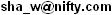

| BigInt |
多倍長整数を扱う為のＣ++用クラス・ライブラリです。
アーカイブ中には、Ｃ++言語及び、アセンブリ言語（Microsoft Macro Assembler）のソースが含まれます。
尚、アーカイブ中のプロジェクトファイルは、 "Microsoft Visual C++.net 2008 Express Edition" となっております。
アセンブリ言語ソースは、Visual C++付属のアセンブラー"ML.EXE"でアセンブル可能です。
※研究中のものです。今後、色々、Version Upするかもしれません。
`BigInt.h'をインクルード宣言して下さい。
リンカーで、入力するライブラリに、本ライブラリ`BigInt.lib'を追加して下さい。
構成を`Release'にし、ランタイムライブラリは『マルチスレッド(/MT)』に設定して下さい。
異なる構成とする場合（例えば、`Debug'等）は、使用する構成に合わせてライブラリをビルドし直して下さい。
（もしくは、`BigInt'フォルダー中のライブラリのソースを、そのままプロジェクトにインポートしてご利用ください。）
BigIntとなります。
char型や、int型の様に、扱う事が可能です。
#include "BigInt.h"
BigInt n1 = 1000; //※左辺を数値にする場合は、符号付き32bitで示せる範囲まで。
整数値の実体（バイト列）は、ヒープ領域に格納され、クラスのメンバーには含まれません。
BigInt型は、メンバー変数として、その整数の実体（バイト列）のポインタを保有しています。
そのため、ローカル変数として定義した場合でも、スタックフレームは圧迫しません。
従って、必ずしもBigIntのクラスオブジェクトをnew演算子で生成する必要性は無く、必要に応じて使い分けてください。
（new演算子でクラスオブジェクトを生成する方が、処理速度は遅くなると思います。）
オペレータ演算子をオーバーライドしていることより、演算子が利用可能です。
| 演算子 | 機能 | 詳細 |
|---|---|---|
| = | 代入 | 左辺の変数に、右辺の値、若しくは式の結果を代入します。 |
| += | 加算 | 左辺と右辺を加算した値を左辺に代入します。 |
| -= | 減算 | 左辺を右辺で減算した値を左辺に代入します。 |
| *= | 乗算 | 左辺と右辺を乗算した積を左辺に代入します。 |
| /= | 除算 | 左辺を右辺で除算した商を左辺に代入します。 |
| %= | 剰余 | 左辺を右辺で除算した剰余を左辺に代入します。 |
| |= | 論理和 | 左辺と右辺の論理和(OR)をを左辺に代入します。 |
| &= | 論理積 | 左辺と右辺の論理積(AND)をを左辺に代入します。 |
| ^= | 排他的論理和 | 左辺と右辺の排他的論理和(XOR)をを左辺に代入します。 |
| <<= | 算術左シフト | 右辺を左辺(unsigned int型のみ対応)で指定した回数、算術左シフトした値を左辺に代入します。 |
| >>= | 算術右シフト | 右辺を左辺(unsigned int型のみ対応)で指定した回数、算術右シフトした値を左辺に代入します。 |
| ++ | インクリメント | 値を＋１します。前置き、後置き共に対応。 |
| -- | デクリメント | 値を−１します。前置き、後置き共に対応。 |
| + | 加算 | 左辺と右辺を加算した値を求めます。 |
| - | 減算 | 左辺を右辺で減算した値を求めます。（左辺がある場合） |
| * | 乗算 | 左辺と右辺を乗算した積を求めます。 |
| / | 除算 | 左辺を右辺で除算した商を求めます。 |
| % | 剰余 | 左辺を右辺で除算した剰余を求めます。 |
| | | 論理和 | 左辺と右辺の論理和(OR)を求めます。 |
| & | 論理積 | 左辺と右辺の論理積(AND)を求めます。 |
| ^ | 排他的論理和 | 左辺と右辺の排他的論理和(XOR)を求めます。 |
| ~ | 反転 | 右辺の１の補数（ビット反転(NOT)した値）を求めます。 |
| - | マイナス | 右辺の２の補数（符合反転(NEG)した値）を求めます。（左辺が無い場合） |
| << | 算術左シフト | 右辺を左辺(unsigned int型のみ対応)で指定した回数、算術左シフトした値を求めます。 |
| >> | 算術右シフト | 右辺を左辺(unsigned int型のみ対応)で指定した回数、算術右シフトした値を求めます。 |
| == | 等しい | 左辺と右辺が等しい時にtrue、それ以外の時にfalseを返します。 |
| != | 等しくない | 左辺と右辺が等しくない時にtrue、それ以外の時にfalseを返します。 |
| > | 大なり | 左辺が右辺を超過する時にtrue、それ以外の時にfalseを返します。 |
| >= | 大なりイコール | 左辺が右辺以上の時にtrue、それ以外の時にfalseを返します。 |
| < | 小なり | 左辺が右辺未満の時にtrue、それ以外の時にfalseを返します。 |
| <= | 小なりイコール | 左辺が右辺以下の時にtrue、それ以外の時にfalseを返します。 |
注意
代入演算子及び単項演算子において、右辺にBigInt型を含む場合は、左辺はBigInt型である必要があります。
演算子!, &&, ||については定義していませんが、
比較演算子はbool型を返すため、左辺、右辺共に比較演算子もしくはbool型であれば、使用可能です。
（左辺、右辺がBigIntである場合が、未定義です。）
基本的に、二項演算子（代入を含まない演算子）は、単項演算子（代入を含む演算子）よりも遅くなります。
コンパイル後の機械語レベルでは、二項演算子は計算結果のオブジェクトを生成し、
その後、変数に代入した後にその生成したオブジェクトを開放するコードとなるためです。
また、インクリメント／デクリメントにおける後置き（n++;）は、前置き（++n;）よりも遅くなります。
コンパイル後の機械語レベルでは、新たに多倍長整数オブジェクトを生成し、
＋１、もしくは−１の演算をする前の整数値を代入し、戻り値としてその値を返すためです。
従って、処理速度の最適化のためには、できる範囲で、(1) 単項演算子で計算式を記述する、(2) 前置き（++n;）を使用すると、処理が早くなる場合があります。
クラスBigIntのメンバー関数です。
（オペレータ演算子は除きます。）
| 戻り値の型 | 関数名 | 機能 |
|---|---|---|
| ─ | BigInt(); BigInt(BigInt& _Src); BigInt(int _Src); BigInt(char* _ptr, unsigned int _sz); ~BigInt(); | コンストラクタ／デストラクタ 引数を設定する事で、値を代入可能です。 |
| BigInt& | Set(char* _ptr, unsigned int _sz); | 任意長で整数値を設定します。 |
| BigInt | Power(BigInt& _Src); | _Src乗を求めます。 |
| BigInt | Power(int _Src); | _Src乗を求めます。 |
| void | resize(); resize(unsigned int _sz) | 整数のバイト長を設定します。 |
| char* | Get_Ptr(); | 整数のポインタ返します。 |
| unsigned int | Get_Byte_Length(); | 整数のバイト長を返します。 |
| unsigned int | Get_Bit_Length(); | 整数のビット長を返します。 |
| char | Get_Sign(); | 符号を返します。 |
| void | Get_Ascii_Dec(string* _asc); | 整数を10進数のAscii文字列で返します。 |
オーバーライドされたオペレータ演算子の処理ルーチンから呼ばれる低レベルのグローバル関数です。
癖がある関数なので、通常は演算子を用いてください。
主に、アセンブリ言語で記述されています。
| 戻り値の型 | 関数名 | 機能 |
|---|---|---|
| void | BigInt_Copy(BigInt* _dst, BigInt* _src); | 転送 |
| void | BigInt_Add(BigInt* _dst, BigInt* _src); | 加算 |
| void | BigInt_Sub(BigInt* _dst, BigInt* _src); | 減算 |
| void | BigInt_Not(BigInt* _dst, BigInt* _src); | ビット反転 |
| void | BigInt_And(BigInt* _dst, BigInt* _src); | 論理積 |
| void | BigInt_Or( BigInt* _dst, BigInt* _src); | 論理和 |
| void | BigInt_Xor(BigInt* _dst, BigInt* _src); | 排他的論理和 |
| void | BigInt_Shl(BigInt* _src, unsigned int _Cnt); | 算術左シフト |
| void | BigInt_Shl1(BigInt* _src); | 1bit算術左シフト |
| unsigned int | BigInt_Shr(BigInt* _src, unsigned int _Cnt); | 算術右シフト ※戻り値に、32bit分の桁あふれを返します。 |
| unsigned int | BigInt_Shr1(BigInt* _src); | 1bit算術右シフト ※戻り値の最上位ビットに、桁あふれを返します。 |
| void | BigInt_Mul(BigInt* _Dst, BigInt _Src1, BigInt _Src2); | 乗算（Radix-16 Booth's multiplication） |
| void | BigInt_Mul(BigInt* _Dst, BigInt _Src1, int _Src2); | 乗算（Radix-16 Booth's multiplication） |
| bool | BigInt_Div(BigInt* _Result, BigInt* _Mod, BigInt _Dst, BigInt _Src); | 除算（回復法） ※商と余を同時に求めます。 ０で除算した場合は、flaseを返すか、０除算割り込み（例外）を発生させます。 |
Ｎ＞０を法とした合同算術を高速に行う計算アルゴリズムです。
例えば暗号理論で重要な計算式である塁余剰演算、
超巨大整数Ｎを法として、超巨大整数Ｐの超巨大整数ｅの塁余剰を求める時などに効果を発揮します。
予め、Set_Modulo(BigInt* N)関数にて法をＮに設定する時に、処理速度が必要な除算をこの段階で行ってしまいます。
実際のＮを法とした合同演算を行う時は除算を用いないため、
Ｎを法とした合同演算を複数回行う場合に計算速度の高速化が見込めます。
`BigInt.h'及び`montgomery.h'をインクルード宣言して下さい。
`BigInt.lib'をリンクして下さい。
montgomeryとなります。
#include "BigInt\montgomery.h"
クラスBigIntのメンバー関数です。
（オペレータ演算子は除きます。）
| 戻り値の型 | 関数名 | 機能 |
|---|---|---|
| ─ | montgomery(); ~montgomery(); | コンストラクタ／デストラクタ |
| void | Set_Modulo(BigInt* N); | 法（module）をNに設定します。 |
| void | MR(BigInt* result, BigInt T); | Tをモンゴメリ･リダクションして、resultに返します。 |
| void | Mul(BigInt* dst, BigInt& src1, BigInt& src2); | モンゴメリ乗算を用いて、以下の計算式を実行します。 dst ＝ （src1 × src2） Mod N |
| void | Power(BigInt* _Result, BigInt& _Src1, BigInt& _Src2); | モンゴメリ乗算を用いて、以下の計算式を実行します。 resilt ＝ src1（src2） Mod N |
BigIntクラスのオブジェクトは、整数の実体のバイト列があるポインターとそのサイズを有し、整数の実体はメンバーに持ちません。
クラスオブジェクトを生成する時に、コンストラクタにてＣ++言語のnew演算子によりヒープメモリを確保し、整数の実体が格納されます。
また、BigIntクラスのオブジェクトを解放する時に、デストラクターでdelete演算子により開放します。
計算の結果において、元のサイズよりバイト長が大きくなる場合は、新たにヒープメモリを確保し直し、格納されます。
元より小さくなる場合は、ヒープメモリの確保し直しは実施しません（new, delete演算子による処理速度低下を防止するため）。
ただし、別途に整数の実際のバイト長をメンバー変数に持っており、余分な桁の演算は省略する構造になっています。
整数のバイト列は、リトルエンディアンで格納されます。
負数は２の補数で表現され、最上位ビットが符号を示します。
例を、以下に示します。
| 10進数値 | バイト列 |
|---|---|
| 1 | 0x01 |
| 127 | 0x7F |
| 128 | 0x80 0x00 |
| 255 | 0xFF 0x00 |
| 32768 | 0x00 0x80 0x00 |
| -1 | 0xFF |
| -127 | 0x81 |
| -128 | 0x80 |
| -129 | 0x7F 0xFF |
| -255 | 0x01 0xFF |
| -32768 | 0x00 0x80 |
Ｓ．Ｗ．
メール ：
ＵＲＬ ：S.W. Homepage
ｍｉｘｉ：id=16558
誤植、改善案等ありましたら、お気兼ねなく連絡頂けると幸いです。